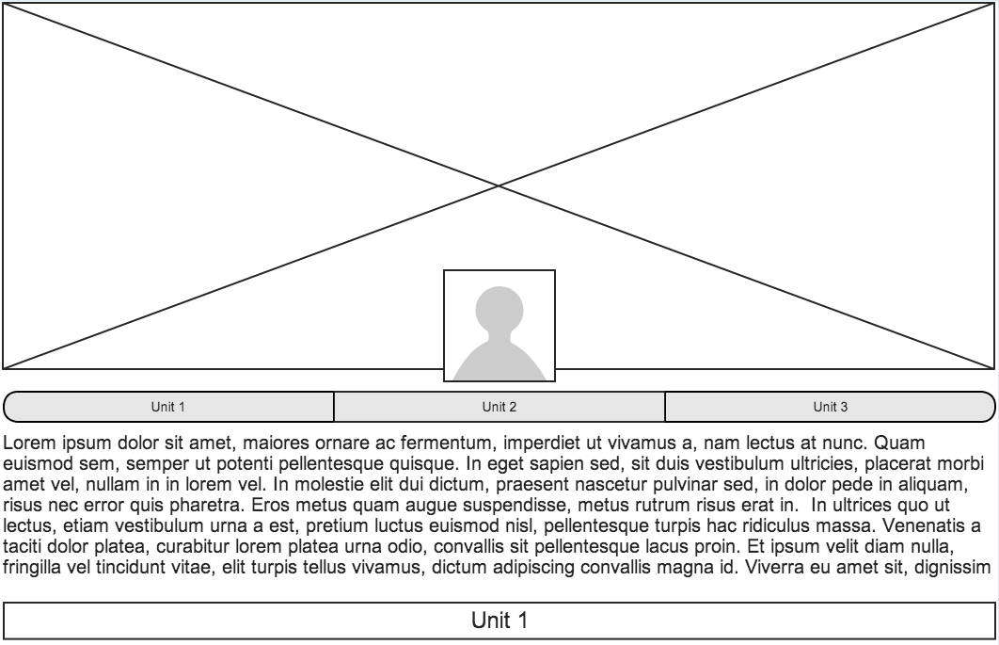
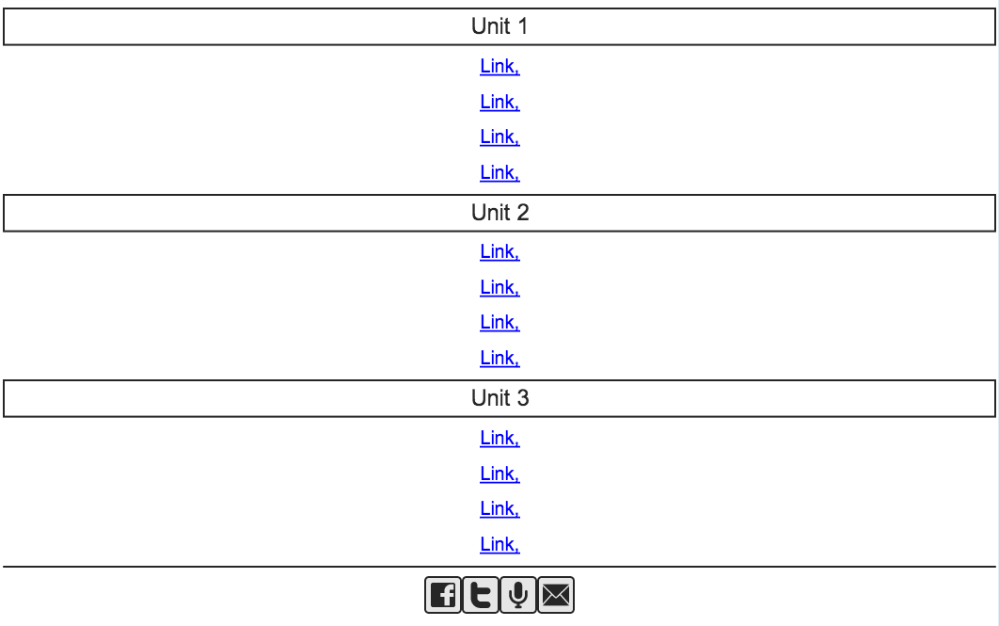

Since this site is just a place for me to store links at the moment I will focus my design around that. I am drawing some inspiration from Medium.com because it features a simplistic layout. My site will feature a large photo spanning the width of the site at the top. Overlayed near the bottom of the photo will be my avatar photo, name and "Phase 0 index". Underneath the photo will be a header bar featuring links for each unit of phase 0 units. Clicking the links will jump down in the page to the right section. Each section will feature its own header and a jump to top button. Below all the sections will be small images that link to my social media accounts. The whole page will feature centered items except for the 'back to top' links.


<br>
